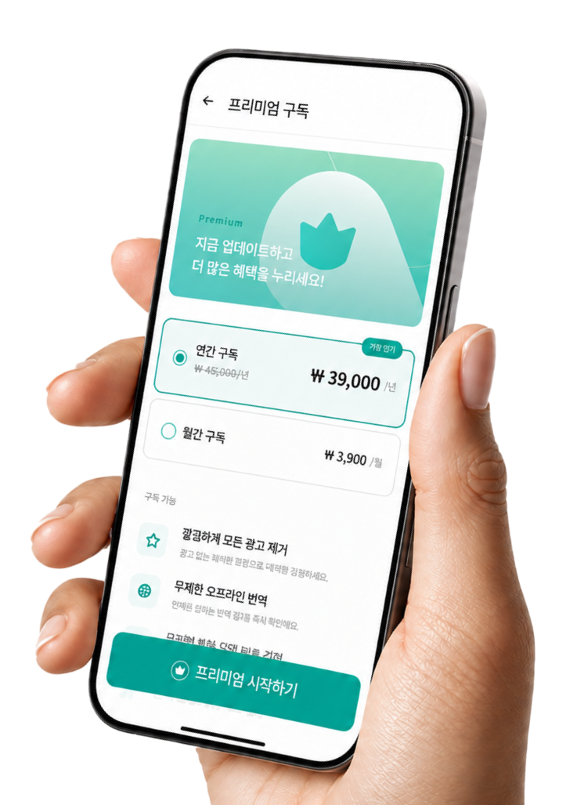
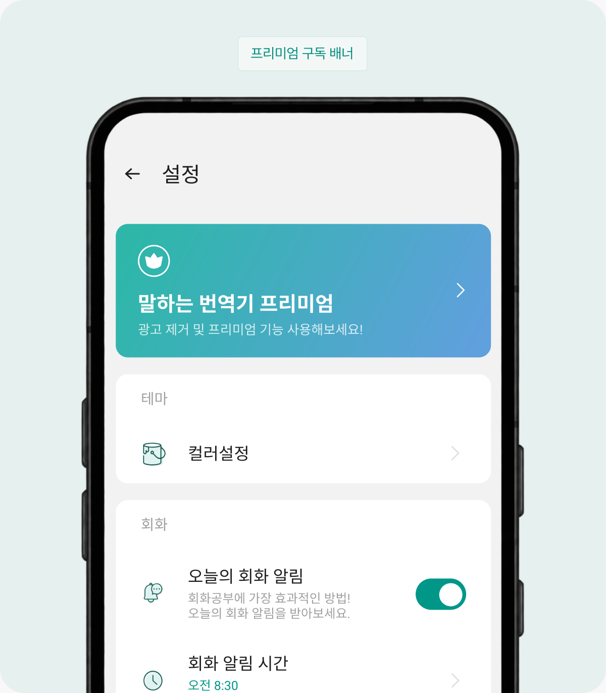
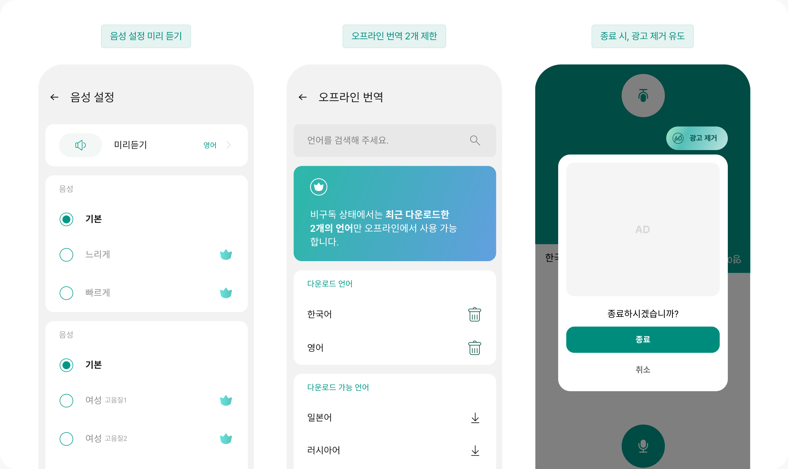
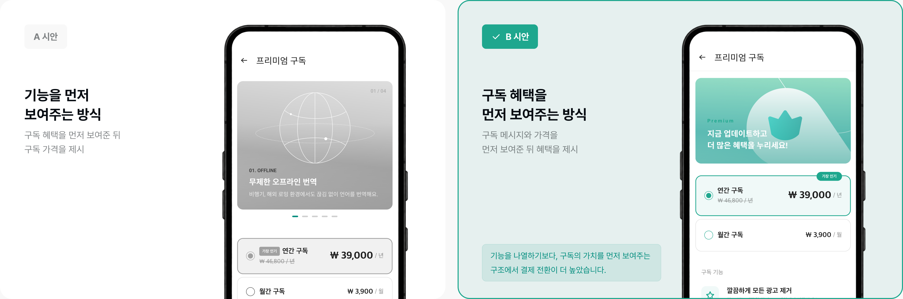
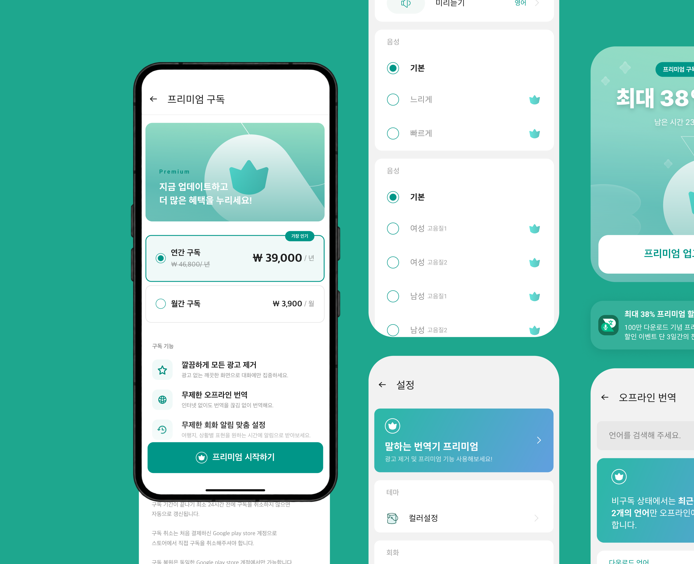

구독 서비스 도입

결제는 발생했지만, 추가 수익으로 이어지지 않았습니다.
광고 제거 평생권으로 매출은 발생했지만, 결제 이후에는 추가 수익을 만들기 어려운 구조였습니다.
지속적인 서비스 운영을 위해 반복적인 수익 모델이 필요했습니다.
결제 시점에 수익이 발생하고
이후 추가 수익 없음
결제 사용자는 광고가 제거되어
추가 수익 발생 어려움
지속적으로 사용하는 기능을 구독 혜택으로 묶어 반복적인 수익 구조를 만들 필요가 있었습니다.
사용자는 계속 나아지는 기능을, 서비스는 그것을 만들 여력을 갖도록 기준을 다시 세웠습니다.
반복 수익을 위해
구독 전환 구조를 설계했습니다.
리서치에서 확인한 두 가지 문제를 각각 하나의 전략으로 바꾸고, 움직일 지표를 먼저 정했습니다.
전환율이 높은 안을 채택합니다.
확인한 두 가지 문제를 구독 전환 전략으로 구체화하고,
각 전략의 성과를 확인할 지표를 정했습니다.
주요 번역 앱의 유료 기능과 과금 방식을 비교해 구독 서비스에서 제공되는 기능을 확인했습니다.
| 앱 | 오프라인 | 광고 제거 | TTS 설정 | |
|---|---|---|---|---|
| 말하는 번역기 | 자사 | – | 영구 결제 | – |
| iTranslate Pro | 구독 | Pro | Pro | Pro |
| DeepL Pro | 구독 | – | Pro | – |
| Papago | 무료 | 무료 | 광고 없음 | 무료 |
| Google 번역 | 무료 | 무료 | 광고 없음 | 무료 |
이를 참고해 자사 사용자에게 필요한 기능을 추가로 검증했습니다.
기존 '말하는 번역기' 사용자 100명을 대상으로 "구독을 할 때 사용하고 싶은 기능"을 조사했습니다.
- 광고제거48%
- 오프라인 번역28%
- TTS 설정14%
- 회화 알림6%
- 앱 컬러 변경 및 기타4%
사용자가 가장 강하게 결제 의향을 보인 기능은 광고 제거와 오프라인 번역이었습니다.
기능을 사용하는 순간, 구독을 만날 수 있게 했습니다.
구독을 별도로 노출하기보다, 사용자가 기능을 사용하다 제한을 만나는 지점에 진입점을 배치했습니다.
필요한 순간에 구독을 제안해 자연스럽게 전환으로 이어지도록 설계했습니다.


구독 페이지의 두 시안을
A/B 테스트를 진행했습니다.

설득보다
선택을 돕는 구독 경험
'브랜딩 → 가격 → 기능' 순으로 정보를 전달하고,
필요한 순간에만 구독 진입점을 노출해
사용자가 스스로 판단하고 선택할 수 있도록 설계했습니다.

측정 · 구독 도입 후 3개월
전체 유료 사용자 기준
구독 결제 수익 상승
영구 결제권 대비
구독 유저 비율 상승
전체 유료 사용자 중
연간 구독 선택 비율
월간 결제 대비
UX 설계가 곧
비즈니스 모델 설계다.
유도 시점, 플랜 비교 방식이 전환율에 직접 영향을 줬습니다.
사용자의 결정을 돕는 구조를 설계하는 것이 핵심이었습니다.
강제 유도보다
맥락이 더 강력하다.
"이 기능 쓰고 싶다"고 느끼는 순간에 연결하는 것이 팝업보다
효과적이었습니다. 사용 맥락을 읽는 것이 전환 설계의
핵심이었습니다.
사용자 경험과 수익은
같은 방향이어야 한다.
사용자가 "구매할 가치"를 느껴야 구독이 성공합니다.
UX 개선과 수익 구조가 같은 방향일 때 전환이
자연스러워집니다.